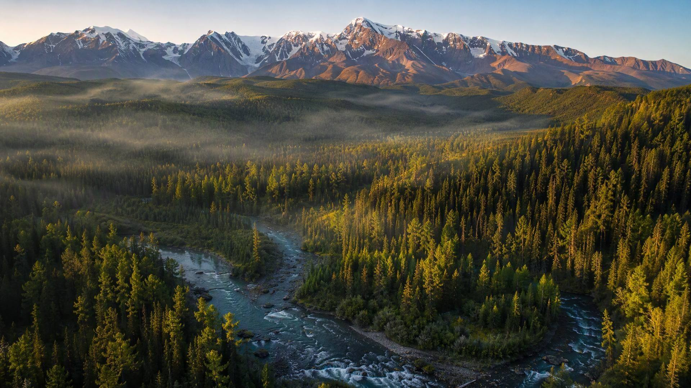
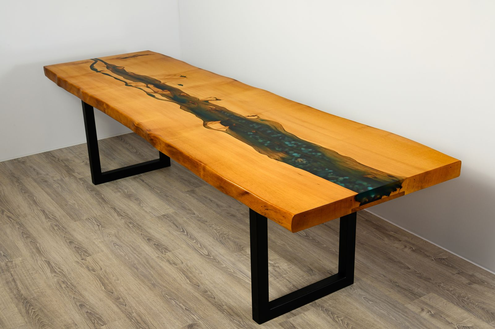

Столы из цельных слэбов алтайского кедра
Эстетика дикой природы в премиальном исполнении. Ручная работа. Доставляем по всей России.

SNS033 — стол-река из трёхметрового слэба кедра
Цельный массив сибирского кедра. Водная гладь с галькой и мхом. Природная, первозданная кромка.
Три способа привести тайгу домой
Что вы получаете вместе со столом
Цельный массив
Стол создан из единого монолита дерева, сохраняя его первозданный силуэт. Мы не скрываем естественные изгибы, сучки и трещины – характер сибирского кедра становится главным украшением изделия.
Два месяца сушки и восемь дней закалки
Мы не торопим природу. Сначала дерево медленно сохнет при контролируемой температуре, а затем проходит глубокую термомодификацию. Это делает природную древесину кедра по-настоящему крепкой, влагостойкой и защищает ее от любых деформаций на десятилетия вперед.
Полимеры премиум-класса
Надежная финишная отделка из Европы (Polistuc и Votteler). Тактильная «живая» поверхность. Поддается реставрации.
Единственный экземпляр
Рисунок годовых колец, изгибы и сучки дерева неповторимы. Второго такого стола не существует.
Не только столы
Мастерская изготавливает из алтайского кедра по вашим размерам: ванные консоли, полки, кровати, скамьи, барные стойки и столешницы. Расскажите, что вам нужно, — подберём слэб и предложим решение. Срок изготовления — от 7 до 21 дня.
Мебель для интерьерных проектов и гостиничного бизнеса
Партнерство для дизайнеров, архитекторов и застройщиков. Работаем как с единичными заказами, так и с комплексным оснащением глэмпингов и отелей.
В любую точку России
Отправляем изделия в надежной упаковке транспортными компаниями. Условия и стоимость доставки обсуждаем индивидуально.
Подобрать мебель
Расскажите о своих пожеланиях. Подберем идеальный срез дерева и реализуем проект под ваш интерьер.